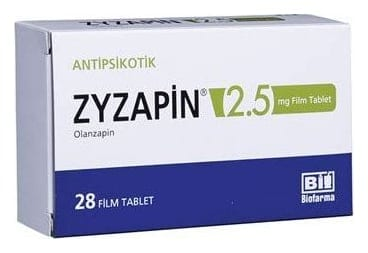

Zyzapin 2.5 mg Film Kaplı Tablet, 28 Adet

Ne için kullanılır
KT · Bölüm 1ZYZAPİN®28 tabletlik blister ambalajda sunulan film kaplı tablettir. ZYZAPİN®film kaplı tabletler beyaz renkli ve yuvarlaktır. Tablet içerisinde sığır sütünden elde edilen laktoz monohidrat bulunmaktadır.
Bu ilacı kullanmaya başlamadan önce bu KULLANMA TALİMATINI dikkatlice okuyunuz, çünkü sizin için önemli bilgiler içermektedir.
Bu kullanma talimatını saklayınız. Daha sonra tekrar okumaya ihtiyaç duyabilirsiniz. Eğer ilave sorularınız olursa, lütfen doktorunuza veya eczacınıza danışınız. Bu ilaç kişisel olarak sizin için reçete edilmiştir, başkalarına vermeyiniz. Bu ilacın kullanımı sırasında, doktora veya hastaneye gittiğinizde doktorunuza bu ilacı kullandığınızı söyleyiniz. Bu talimatta yazılanlara aynen uyunuz. İlaç hakkında size önerilen dozun dışında yüksek veya düşük doz kullanmayınız.
ZYZAPİN®olanzapin adlı etkin maddeyi içerir. ZYZAPİN®antipsikotikler adı verilen bir ilaç grubuna aittir ve aşağıdaki durumların tedavisinde kullanılır: Gerçekte var olmayan şeyleri duymak, görmek veya hissetmek, yanlış inanışlar, anormal şüphecilik, içine kapanmak gibi belirtilerin eşlik ettiği bir hastalık olan şizofreninin tedavisinde kullanılır. Ayrıca bu hastalığı yaşayan hastalar kendilerini depresif, endişeli veya gergin hissedebilirler. Heyecan ve coşku hali durumları görülen, orta ve şiddetli manik dönemler,
ZYZAPİN®’in manik dönemde (heyecan veya coşku belirtileri olan bir durum) olanzapin tedavisine cevap veren bipolar bozukluğu (ruhsal durumdaki zıt yönlü değişiklikler) olan hastalarda, bu belirtilerin tekrar oluşmasını önlediği gösterilmiştir.
ZYZAPİN®benzer durumların tedavisi için hekimin uygun gördüğü durumlarda 13-17 yaş arasındaki ergen hastalarda da kullanılabilir.